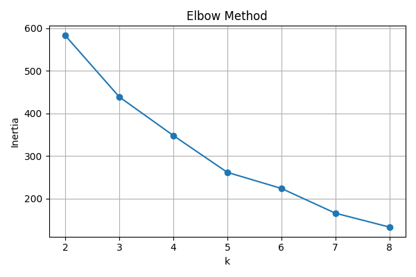

Archivo generado automáticamente a partir de los artefactos en data/05_train.
Gráfico del codo y tabla con inercia por valor de k.
| k | inertia |
|---|---|
| 2 | 582.8449948020836 |
| 3 | 438.6818281106081 |
| 4 | 347.99295339631107 |
| 5 | 261.5102243733108 |
| 6 | 223.73075407775025 |
| 7 | 165.6021254564639 |
| 8 | 133.01655705310034 |
Resumen de métricas de calidad del clustering.
| silhouette | davies_bouldin | calinski_harabasz |
|---|---|---|
| 0.3735178919547753 | 0.8409798572304468 | 135.67639626614786 |
Listado de países y su cluster asignado (muestra).
| Country/Region | Province/State | Date | Confirmed | Deaths | Recovered | Active | WHO Region | cluster |
|---|---|---|---|---|---|---|---|---|
| Afghanistan | Unknown | 2020-07-27 | 36263 | 1269 | 25198 | 9796 | Eastern Mediterranean | 1 |
| Albania | Unknown | 2020-07-27 | 4880 | 144 | 2745 | 1991 | Europe | 1 |
| Algeria | Unknown | 2020-07-27 | 27973 | 1163 | 18837 | 7973 | Africa | 1 |
| Andorra | Unknown | 2020-07-27 | 907 | 52 | 803 | 52 | Europe | 1 |
| Angola | Unknown | 2020-07-27 | 950 | 41 | 242 | 667 | Africa | 3 |
| Antigua and Barbuda | Unknown | 2020-07-27 | 86 | 3 | 65 | 18 | Americas | 0 |
| Argentina | Unknown | 2020-07-27 | 167416 | 3059 | 72575 | 91782 | Americas | 0 |
| Armenia | Unknown | 2020-07-27 | 37390 | 711 | 26665 | 10014 | Europe | 1 |
| Australia | Western Australia | 2020-07-27 | 659 | 9 | 647 | 3 | Western Pacific | 3 |
| Austria | Unknown | 2020-07-27 | 20558 | 713 | 18246 | 1599 | Europe | 1 |